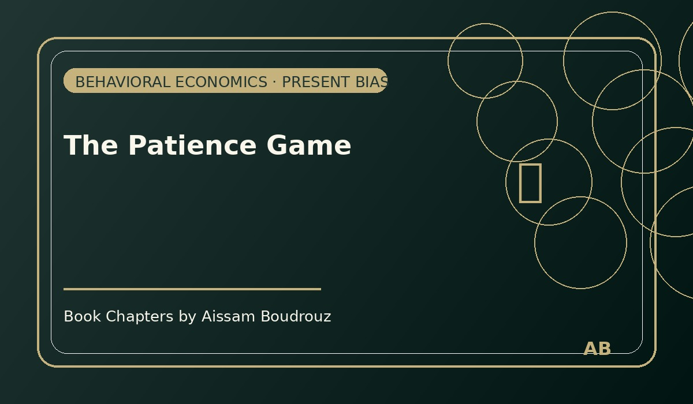

The Patience Game
One evening, I was sitting with a friend at a small café near the corniche. The waiter brought us two glasses of mint tea, steaming hot and perfectly sweet — the kind that makes you forget you had a long day.
We started talking about random things: work, money, plans. Then, out of nowhere, my friend asked me a question that sounded simple but felt like a trap.
"Okay, Aissam," he said, smiling. "If I offered you 5,000 dirhams right now, or 6,000 if you wait three months, which one would you take?"
I laughed. "Honestly? I'd take the 5,000 now."
He nodded, as if he already knew my answer. Then he asked again, but changed the timing a little.
"Alright. What if I gave you the choice between 5,000 in three months or 6,000 in four months?"
I paused. That time, the answer felt easier: "In that case, I'd wait for the 6,000."
We both smiled, realizing the funny contradiction in my answers.
When the present blinds us
That little mental game isn't just a trick; it's a whole theory in behavioral economics called temporal discounting.
It explains why we often prefer smaller rewards now over bigger ones later — a habit economists call present bias.
When the present is in front of us, it has weight. It feels louder, closer, more real. But when both options are in the future — when "now" isn't part of the equation — our brain suddenly becomes wiser, calmer, more rational.
It's strange, isn't it? When the reward is far away, we can be patient. But when it's sitting right in front of us, the rational voice disappears, and we become children again, saying, "I want it now."
The everyday version of the same story
You don't need to be in a café to see it happen. Everyday life is full of small versions of the same choice.
When you're hungry after work, you'll probably go for fast food instead of waiting to cook something healthy. But if you think about it in the morning — before you're hungry — you'll promise yourself:
"Tonight, I'll eat something healthy."
And you probably believe it when you say it.
That's because when hunger hasn't arrived yet, the present bias is sleeping. You're planning in the future, and your rational mind is in charge. But once the smell of fries hits your nose… reason takes a nap.
The paradox of waiting
It's funny how our brains work. The more distant a reward is, the easier it is to promise ourselves we'll wait for it.
That's why saving money is hard, why diets fail, and why new gym memberships in January often turn into unused cards by March.
In Morocco, we say "Sbark 3la khatrek" — be patient, take your time. But our minds are not built for patience. We were made for the thrill of the now.
Still, knowing this helps. Because once you understand that your brain is wired this way, you can catch it — you can laugh at yourself when you choose the smaller, faster reward and whisper:
"I see what you're doing, Homo Economicus."
That night, as I left the café, the air was cool, and the city lights danced on the water. I thought about those imaginary 6,000 dirhams, and for once, I didn't rush to choose. I just walked slowly, thinking maybe the secret to life — and economics — is not about the money, but about learning when to wait. 🍃
← Back to Articles